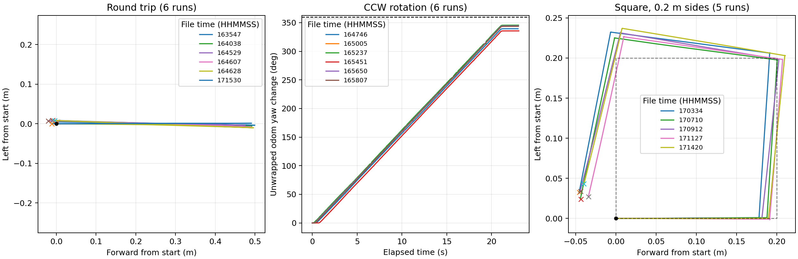

ROBOTICS SOFTWARE
박희연
ROS2 기반 주행과 위치 보정을 다루는 로봇 소프트웨어 개발자
01 / LOGISTICS AMR 진행 중
주행은 Nav2로, 마지막 정렬은 마커로
초기 다중 로봇 Nav2 구성과 라이다·ArUco 기반 위치 보정·정렬 담당 · 핵심 정렬 기능 구현 완료, 실물 통합 검증과 최종 튜닝 진행 중
개인 기여 · 주행 환경 구성 → 위치 보정·정렬
- 3대의 독립 Nav2 환경 구성TurtleBot3별 namespace·TF 접두사·Nav2 파라미터와 센서·명령 브리지를 분리했습니다. AMCL 초기 위치와 cmd_vel 전달 흐름을 정리해 RViz 목표 주행을 확인했습니다.
- Nav2 주행 문제 추적lifecycle inactive 상태와 지도상 장애물에 걸린 시작 위치를 확인해 목표 주행이 멈추는 원인을 분리했습니다.
- Action 기반 라이다·ArUco 정렬·보정Action 요청 시 카메라를 실행하고, 라이다 벽 직선과 ArUco 마커 방향각으로 방향·좌우·거리를 보정합니다. 정렬 완료 측정값으로 map→base_footprint 위치를 계산해 /initialpose로 발행하고, AMCL/Nav2 위치를 보정한 뒤 카메라를 종료합니다.
- CPU 부하 대응Action 요청 시에만 카메라를 실행·종료하고, 320×240 캘리브레이션 적용과 TF listener 실행 분리로 부하를 줄였습니다.
팀원 담당 · Route Graph 완성·Route Server, 후반 노드 주행, 도킹, 미들웨어·웹 관제·배차 (개인 참여: Route Graph GeoJSON 노드 좌표 초안까지)
작업 노드 근처까지 이동
카메라 시작 · 라이다 벽 직선 + 마커 방향각 보정 반복
/initialpose 발행 · 카메라 종료
- 언어 · 개발 기술
- Python · ROS2(Humble/Jazzy)
Nav2 · AMCL · TF2 · pytest - 사용 프로그램
- Gazebo · RViz
OpenCV(ArUco) · GeoJSON - 로봇 · 구현 환경
- TurtleBot3 3대 시뮬레이션
실물 TurtleBot3(LiDAR·카메라 정렬 테스트)
01 / LOGISTICS AMR · FIELD TEST
라이다 벽 직선 + 마커 방향각 정렬 검증
실물 TurtleBot3 3대 · 4개 노드 · 2026.10.07~08 · 로봇 ROS 로그와 작업 세션 기록 기준
판단 · 정렬 방식 개선
- 마커 x/z 방식의 한계 확인마커 x/z 값이 0.2 cm 안으로 맞아도 실제로는 약 7° 회전·2~3 cm 벗어난 사례(robot3 N6)와 1.5 cm·1.6° 틀어진 사례(robot1 N3)를 줄자로 확인했습니다(각 1회).
- 라이다 벽 직선 + 마커 방향각으로 전환회전·중심·거리 보정을 반복해 좌우·거리·yaw 잔차가 허용 오차(최종: 좌우 3 mm·거리 5 mm·yaw 0.5°) 안에 3회 연속 들어오면 정렬 성공으로 판정합니다.

| 노드 | 로봇 | 성공/시도 | 좌우 / 거리 / yaw | 비고 |
|---|---|---|---|---|
| N5 ID24+29 · 벽 정렬, 정면 로봇팔 | robot1·2 | 19/2310/7~8 | 0.5 / 0.4 / 1.0° | 튜닝 포함 · 실패 4: 튜닝 중 시간 초과 2, 로봇팔이 카메라 가림 2 |
| N6 ID25+28 · 벽 정렬, 정면 로봇팔 | robot1·2 | 3/310/7~8 | 0.1 / 0.3 / 0.5° | 33~54초 |
| N3 ID27 · 컨베이어·로봇팔 | robot1·2 | 6/710/7~8 | 0.3 / 0.3 / 0.4° | 실패 1: 목표값 입력 오류 |
| N4 ID26 단일 · 컨베이어·로봇팔 | robot1·2 | 5/610/8 | 0.3 / 0.3 / 0.5° | ID23 추가 전 · 실패 1: 로봇팔 설치 후 ID26 가림 |
| N4 ID23+ID26 · 컨베이어·로봇팔 | robot2·3 | 8/810/8 | 0.2 / 0.4 / 0.4° | ID23 추가 후 · 10~69초 |
잔차는 로봇 자체 측정값이며, 10/7 robot1에는 튜닝 중 런(허용 오차 1 cm/1°)이 포함됩니다. 10/8 robot2 N3·N4와 robot3 N4는 작업 세션 기록 기준이고, 줄자 확인은 로봇·노드별 최종 설정에서 1회씩(정성 일치) 했습니다. robot3 N5·N6(10/7)와 N3는 제외했습니다.
EKF 전·후 비교용 기준값입니다. odom 기준 복귀 위치 차이는 0.5 m 왕복 12.51 ± 5.43 mm(n=6), 0.2 m 사각형 53.03 ± 6.11 mm(n=5)였고, 360° 회전은 6회 모두 360°에 못 미쳤습니다(yaw −17.95 ± 3.78°).
이후 팀원의 EKF 전·후 비교(0.8×0.4 m 사각형, 각 3회): odom 위치 오차 12.19 → 6.03 cm, 실제 복귀 위치 오차 11.50 → 11.10 cm
다음 단계 · 줄자 반복 측정 · robot3 N3 검증 · 정렬 시간 단축 · Zenoh 경유 Action 통합 · PD 성격 제어의 PID 확장·재튜닝
2026.10.08 기준02 / ON-DEVICE AI · SAFE EYE
산업 현장 보호구 착용 감지
객체 탐지(OD)와 다중 라벨 분류(MLC)를 비교할 데이터를 구성하고, 비교 결과를 실제 판정 흐름에 반영했습니다.
담당 · 데이터 전처리 / 시스템 통합 / 대시보드
- 탐지용 데이터를 사람 단위 분류 데이터로 변환약 22,000장의 원본에서 사람 검출·크롭과 PPE 라벨 매칭을 자동화하고, 겹침·저해상도·라벨 충돌 데이터를 제거했습니다.
- 클래스 불균형과 평가 데이터 누수 대응소수 상태는 모두 유지하고 다수 상태는 최대 1,000장으로 샘플링했습니다. 독립 평가용 원본 100장의 파생 크롭은 학습에서 격리했습니다.
- 하이브리드 PPE 판정1명은 MobileNetV3 분류(MLC), 2명 이상은 YOLO 객체 탐지(OD)로 분기합니다. 사람 수만큼 반복되는 분류 추론의 속도 저하를 고려했습니다.
- 대시보드와 모듈 통합config·camera·detector를 분리해 팀원 모델을 같은 입출력 흐름으로 연결하고, 감지 인원·위반·위험 구역·FPS를 한 화면에 표시했습니다.
| 환경 | 헬멧 OD | 헬멧 MLC | 조끼 OD | 조끼 MLC | FPS (PC 측정) | 채택 |
|---|---|---|---|---|---|---|
| 1인 n=588 | 92.6% | 91.6% | 79.6% | 90.8% | MLC 3.48 / OD 3.70 | MLC |
| 3인 이상 n=889 | 92.8% | 89.6% | 73.6% | 77.8% | MLC 1.92 / OD 3.70 | OD |
1인 환경에서는 조끼 정확도가 MLC 90.8%로 OD보다 11.2%p 높고 속도 차이는 작았습니다. 3인 이상에서는 조끼 정확도 차이가 4.2%p로 줄어든 반면 MLC 속도가 절반 수준으로 떨어져, 실시간성을 위해 OD를 선택했습니다.
- 언어 · 데이터 처리
- Python · 데이터 전처리
다중 라벨 분류 · 평가셋 구성 - 모델 · 실행 기술
- YOLO · MobileNetV3
TFLite - 대상 장치 · 통합 화면
- Raspberry Pi 5
Safe Eye 대시보드
03 / STM32 · EMBEDDED CONTROL
센서와 상태 표시를 연결한 RC카
STM32F411RE 기반 무선 RC카 팀 프로젝트에서 IMU·초음파 센서와 LCD 상태 표시를 담당하고, 팀의 무선 조종·모터 제어 파이프라인에 통합했습니다.
담당 · 센서 입력 / 장애물 감지 / LCD 상태 표시
- 초음파 장애물 감지HC-SR04의 Echo 펄스를 타이머 Input Capture로 측정했습니다. 10 cm 이내 장애물을 감지하면 전진 목표 RPM을 0으로 제한하고 후진·회전은 허용했습니다.
- IMU 기울기 입력ADXL345의 가속도 값을 I2C로 읽어 차체 기울기를 감지했습니다.
- IMU 기반 LCD 화면 전환IMU로 감지한 기울기 상태에 따라 LCD 화면이 바뀌도록 구현해, 차체 상태를 화면으로 바로 확인할 수 있게 했습니다.
- 센서·모터 결합 후 오동작 해결기존 코드와 비교하고 개별 동작을 확인한 뒤 납땜·연결 오류를 수정했습니다. 통신 응답뿐 아니라 실제 센서값·출력 동작과 물리적 배선을 함께 검토해야 한다는 점을 배웠습니다.
통합 구조 · 1 ms 타이머 기준 주기 분리
| 주기 | 처리 내용 |
|---|---|
| 10 ms | 목표 RPM · 장애물 조건 · 엔코더 · 모터 제어 |
| 50 ms | 패킷 확인 · IMU 읽기 · LCD 상태 갱신 |
| 100 ms | 초음파 트리거 |
타이머 인터럽트에서 플래그를 설정하고 메인 루프에서 처리하는 구조로 센서 읽기와 표시·통신 주기를 분리했습니다.
무선 조이스틱 입력부터 모터 제어까지 연결하고, 10 cm 장애물 정지·500 ms 통신 단절 정지·IMU 연동 LCD 표시를 실물 주행으로 시연했습니다.
- 언어 · 제어 기술
- C · HAL · I2C
Input Capture · 타이머 인터럽트 - 사용 프로그램
- STM32CubeMX
- 보드 · 센서
- STM32F411RE · ADXL345
HC-SR04 · LCD
04 / PLC · MINI PROJECT
자동화 설비 HMI와 서보 기본 제어
운용 화면을 설계하고, 조작 입력과 PLC 제어·상태 정보를 연결했습니다.
담당 · HMI 화면 설계 / 기본 기능 구현
조작과 상태 확인이 가능한 화면을 구성했습니다.
- HMI 3개 화면 설계메인·서보 컨트롤·환경 컨트롤로 구분하고, 한·영 전환과 위치·속도·에러 상태 표시를 구성했습니다.
- 서보 기본 동작 연결원점 복귀, 위치 지정, JOG 이동·속도 변경, 에러 리셋, 동작 시작과 비상정지·해제 기능을 구현했습니다.
- 통합 오류 해결HMI 태그 연결 오류를 수정하고, JOG 버튼 미입력 시에도 속도값이 인가되던 문제에 비동작 조건을 추가했습니다.
역할 분담 · 창고 층 선택, Tact Time 계산과 적재 램프 응용 로직은 팀원 담당
- 제어 · 화면 설계
- HMI 설계 · 서보 기본 제어
태그 연동 · Ethernet - 사용 프로그램
- GX Works2
GT Designer3 - PLC · 서보 장치
- Mitsubishi Q03UDV
MR-J4